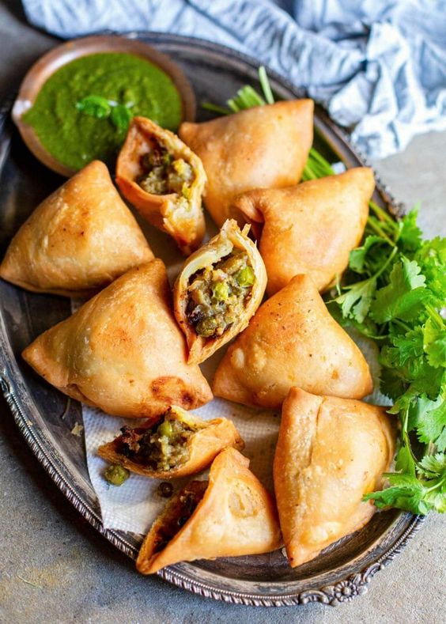

Deepavali Dish
Samosa
.jpg)

Ingredient
For the dough:
- 2 cups (250g) Flour
- 1/4 cup (60ml) Oil or melted ghee
- 1/4 cup (60ml) Water
- 1/2 teaspoon Salt
For the filling:
- 2 tablespoons Oil
- 3 Potatoes, boiled (500g)
- 1 cup (150g) Green peas, fresh or frozen
- 2 tablespoons Coriander leaves, chopped
- 1 Green chili, finely chopped
- 8-10 Cashews, crushed (optional)
- 2-3 Garlic cloves, crushed
- 1 tablespoon Ginger paste
- 1 teaspoon Coriander seeds, crushed
- 1/2 teaspoon Garam masala
- 1 teaspoon Chili powder
- 1 teaspoon Cumin seeds
- 1 teaspoon Turmeric
- 1 tablespoon Lemon juice
- Salt to taste
- 1/4 cup (60ml) Water
Instructions
- Make the dough: in a large mixing bowl, mix flour and salt. Add the oil and then start mixing with your fingers, rub the flour with the oil until the oil is well incorporated. Once incorporated, the mixture resembles crumbs.
- Start adding water, little by little and mix to form a stiff dough (the dough shouldn’t be soft). Cover the dough and let rest for 30 minutes.
- Meanwhile make the filling: roughly chop/mash boiled potatoes, set aside. Heat oil in a large pan, add cumin seeds, coriander seeds, chili powder, turmeric and garam masala, cook for 30-60 seconds to release the flavours. Add crushed garlic, ginger paste, chopped green chili and cook for 1 minute. Add chopped onion and sauté for 3-4 minutes. Add chopped potatoes, green peas, lemon juice, water and salt, cook for 4-5 minutes, stirring frequently. Add crushed cashew and cook for 1 minute more.
- Turn the heat off, add chopped coriander leaves, stir well and set aside to cool.
- Shape the samosas: Once the dough has rested, give it a quick knead. Then divide the dough into 6-7 equal parts. Shape into balls.
- Start working with one ball at the time, keep the remaining dough balls covered all the time. Roll out each ball into an oval, about 6-inches long and 4inches wide. Then cut it into two parts. Coat the edges of each semicircle with water. Pick the two corners of the semicircle and bring them together, edges overlapping slightly, to form a cone. Press down on the seam to stick it. Fill the samosa with the potato filling, around 1-2 tablespoons. Don't overfill the samosa. Now, brush the edges again with water, then pinch the edges and seal the samosa. Repeat same process with the remaining dough and filling, keep filled samosa covered with a moist kitchen towel while working.
- Fry the samosa: heat oil to 350F (175C). Drop the samosas into hot oil, 4-5 pieces at the time. Reduce the heat to medium. Fry for 4-5 minutes, until golden and crisp.
- Drain on paper towels before serving. Serve with your favorite sauce.

.png)
.png)
.png)